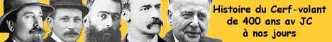
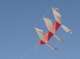
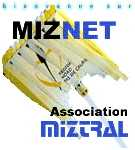
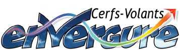
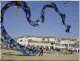
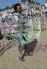
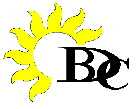
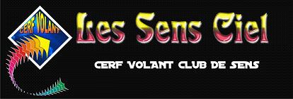
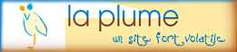
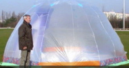

Liens
Liens vers quelques sites cervolistiques, soit des copains, soit d'importants à ne pas manquer. Si vous en connaissez d'autres, signalez les moi...

Cerf-volant Club de France, CVCF
Vie du club. Actualités. Calendrier des manifestations.
Nombreux liens vers des sites de CV.
Galeries photos de CV, de manifestations, etc.

Site tenu par Patrick et Patricia Mouchague.
Bibliographie du cerf-volant. Actus.
Historique des cerfs-volants, de l'aviation, annonces, liens divers.

Famille Lejosne Les Lejosne sont très créateurs de choses variées et intéressantes
Des arches de 2000 cerfs-volants, des trains,
Des monofils très variés, des micros aux plus grands.

Club Miztral Site du club. Tous les bulletins d'info du club parus. Histoire du cerf-volant.
Méteo. Liens vers clubs et commerçants du cerf-volant.
Galeries de photos. Plans, couture, bridage, noeuds, etc.

Envergure Site de Michel Gressier. Motivations. Tout sur le vent. Les réalisations de Michel Gressier.


La boutique et les prestations.
Galerie photos de CV, de manifestations, d'expos. Le boomerang, etc.
Une idée des créations de l'auteur ? cliquez sur la vignette !


Didier Ferment, CVCF Cerfs-volants de Didier. Monofils, 2, 3, 4 lignes, toujours très originaux.
Musique éolienne : orgues, fils, coquillages, bouteilles fendues, etc.
Jardins du vent.

BDC.Henri Beaucoup de photos de festivals autour de la Vendée etc. Videos.
Le vent, la photo aérienne, les astuces (noeuds, etc.) Très beau site, plein d'animations, de musique, et autres.
Christophe Jacquemoud, CVCF Photographie aérienne : photo de son village, point.
Harald Prinzler Gonflables, Flow-forms... Plans détaillés, Calculateur Excel pour Flow-forms.
Photos aériennes.
Dieppe Site de Dieppe Capitale du Cerf-Volant : Photos, historique, videos.
Histoire du CV, Forum, Organisation, Contacts. La ville de Dieppe.
CERFVOLANTSERVICE (D.Miquet) Stella-Plage Boutique de Dominique Miquet et Laurence à Stella-Plage. Toute la gamme CV et accessoires.
Organisation et participation à de nombreux festivals dans le Nord (photos).
Initiations, videos, jeux.
Jean-Luc VANSNICKT Un site intéressant en particulier pour les monofilistes et constructeurs personnels, même débutants. Trombinoscope des cervolistes volontaires. Un calendrier des manifestations à venir bien tenu à jour, une référence !
Beaucoup de rubriques très détaillées sur les matériaux, la construction, etc.
Plans de CVs, galerie de photos de constructions personnelles ou non, de festivals.

Les Sens Ciel Le site du club de Sens, avec des photos des festivals, et les réalisations énormes de Jean-Paul : le Hérisson, l'Escargot, le Cafard, le dragon Bol Z, le Nautilas, le Faucon Millenium, etc...

La Plume Un site pas cervolistique pour un sou mais qui parle d'oiseaux bien sûr.
Instructif, mais surtout très divertissant par la verve de l'auteur des textes.

Blog de Gérard Rosenblatt Ses créations, comme son génial igloo éologonflé , etc...
Il y fait 20° de plus que dehors... et pas de vent !
Et des liens vers ses hobbies...